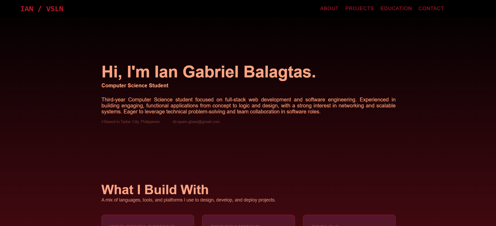
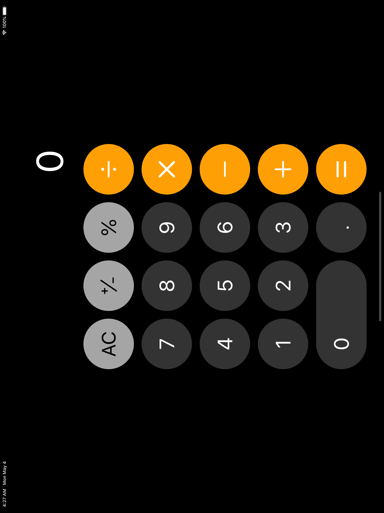
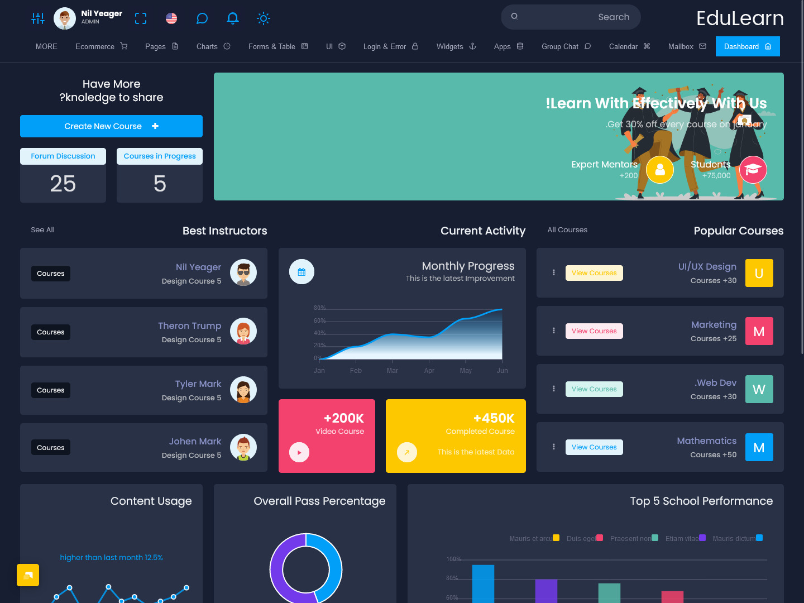
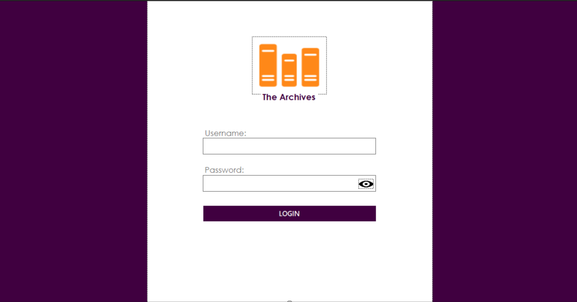

Third-year Computer Science student focused on full-stack web development and software engineering. Experienced in building engaging, functional applications from concept to logic and design, with a strong interest in networking and scalable systems. Eager to leverage technical problem-solving and team collaboration in software roles.
A mix of languages, tools, and platforms I use to design, develop, and deploy projects.
A few things I've built — hover over each one to learn more.

A personal portfolio website showcasing my skills, projects, and experience.
A responsive personal portfolio designed to present my skills, projects, and background in a clean and organized way. It provides visitors with an overview of my work and serves as a central place to showcase my development progress. Built using HTML, CSS, and JavaScript.

A simple web calculator for performing basic mathematical operations.
A functional calculator website designed to provide a simple and convenient way to perform basic calculations. It handles user input and mathematical operations through an interactive interface. Built using HTML, CSS, and JavaScript.

A student dashboard for organizing and displaying academic information.
A student-focused dashboard designed to present academic information in a clear and organized interface. It helps students easily view important information and navigate different sections of their dashboard. Built using HTML and CSS.

A desktop application for managing books, borrowers, and library records.
A library management system designed to simplify the organization of books and borrower records within a library. It allows administrators to manage book information and handle basic library operations through a user-friendly interface. Built using VB.NET and Windows Forms.